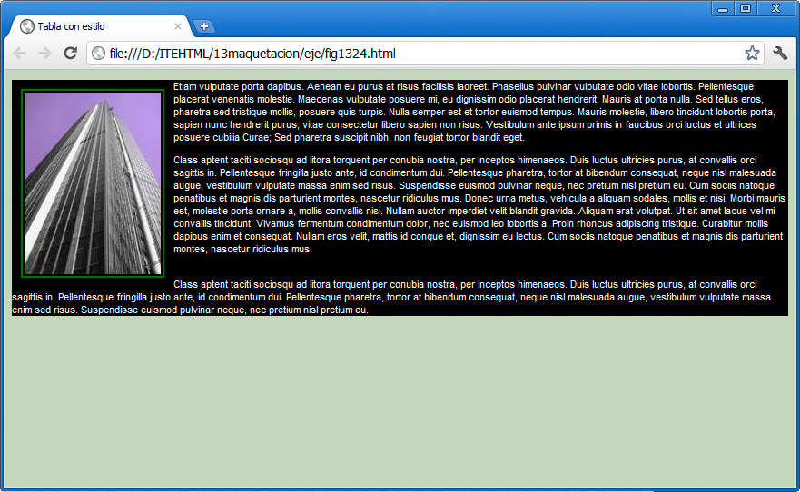
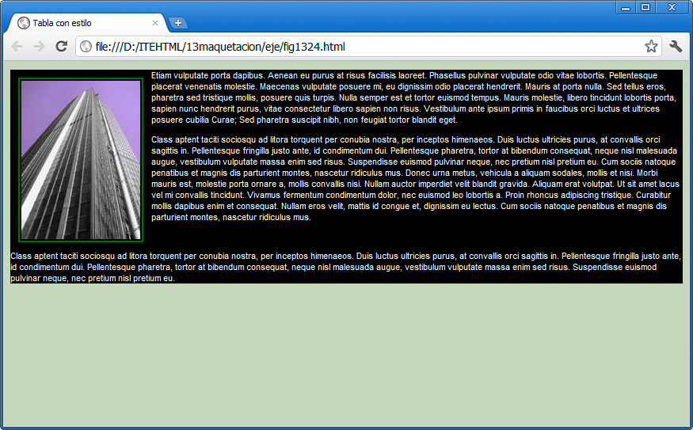

Los elementos de una página web pueden reubicarse a la izquierda o a la derecha con tan sólo emplear la propiedad float, haciendo que el resto del contenido se sitúe alrededor de ese elemento.
En el siguiente ejemplo la regla:
img { float:left;}
provoca que el texto se sitúe alrededor de la imagen.

Sus valores pueden ser right (derecha), left (izquierda) o none (para eliminar cualquier flotación).
Eliminar flotaciones
La propiedad clear, seguida del valor right (derecha), left (izquierda), both (tanto izquierda como derecha o none (desactivar valores previos) nos permite deshacer flotaciones de objetos anteriores y restaurar el orden normal.
Observa cómo varía el ejemplo anterior con esta línea:
div#bloque2 { clear:both;}

El último párrafo, que se encuentra en el bloque2, ya no se ajusta a la imagen. Esta técnica se emplea con frecuencia al comenzar nuevas secciones en un documento, como las cabeceras, el pie de página, etc.
Pregunta Verdadero-Falso
Verdadero Falso